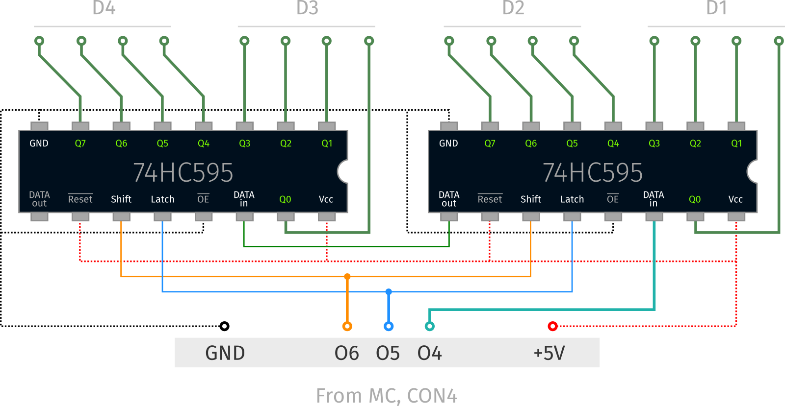

Чтобы использовать библиотеку, нужно добавить строку #include "alpro/AL14K.h" в проект.
#include "alpro/AL14K.h"
void main() {
...
}
Библиотека содержит определения следующих переменных, функций и типов данных.
| Переменная | Значение |
|---|---|
| PG | вход Power Good, устанавливается в 0 при недостаточном напряжении питания; если отключить питание от контроллера, то после того, как PG станет равным 0, процессор проработает ещё от 5—150 миллисекунд, в зависимости от включенной периферии; этого может быть достаточно, чтобы изменить состояние выходов или даже сохранить пару байт в EEPROM |
| CON5_1 CON5_2 CON5_3 CON5_4 |
TTL входы/выходы, напрямую подведённые к ногам процессора; CON5_2 и CON5_4 соединены с АЦП, то есть невозможно совместное использование этих пинов и АЦП ; CON5_1 и CON5_3 соединены с АЦП платы расширения, то есть при её отсутствии их можно использовать как обычные входы/выходы; (также смотри раздел «АЦП») |
| TXD RXD |
линии первого канала микросхемы *232; по умолчанию используются для UART’а |
| RTS CTS |
линии второго канала микросхемы *232 |
| SCL SDA |
линии I2C, либо TTL входы/выходы |
Значения этих переменных соответствуют физическим уровням напряжения на ногах процессора. Если, например, такую переменную установить в 1, то на соответствующем выводе будет высокий уровень (5 вольт), а если в 0, то низкий (земля). Ток таких выходов не должен превышать 15 миллиампер. Максимальный ток утечки входов 650 микроампер (при переключении из 1 в 0, после переключения — 50 микроампер).
Примеры использования:
#include "alpro/AL14K.h"
void main() {
while (1) { // бесконечный цикл
CON5_1 = 0; // пин 1 разъёма CON5 установится в низкий уровень (земля)
CON5_1 = 1; // пин 1 разъёма CON5 установится в высокий уровень (5 вольт)
CON5_1 = 0; // пин 1 разъёма CON5 снова установится в низкий уровень (земля)
// приблизительная продолжительность "единицы" на выходе — 0.5 микросекунды
dog();
}
}
Не стоит управлять пинами, которые используются только как входы, типа PG, RXD и CTS, поскольку
это может привести к необратимому повреждению устройства. Читать их состояние можно без опаски.
#include "alpro/AL14K.h"
void main() {
while (1) { // бесконечный цикл
while (PG) { // пока хорошее напряжение питания,
dog();
led_toggle(L12); // делать что-нибудь полезное
}
beep(1); // включить тревогу, как только напряжение просядет
// до критического уровня
while (!PG) { // ждать, пока питание не восстановится
dog();
}
beep(0); // выключить тревогу, как только напряжение восстановится;
// продолжить бесконечный цикл с начала
}
}
| Функция | Назначение |
|---|---|
| input() | считать значения входов; соответствующий бит будет равен 1, если вход заземлён |
| input_comp() | считать значения входов компаратора (то же, что и инвертированный input()) |
| output(x) | вывести байтовую переменную или константу x на выходы; если соответствующий бит равен 1, то выход притянется к земле |
| pin_get(pin) | считать состояние конкретного входа; вернёт 1, если вход зазаемлён; pin может быть любым из I0—I7 или их комбинация; входы I4—I7 также являются входами платы расширения |
| pin_set(pin) | активировать конкретный выход; выход будет притянут к земле; pin может быть любым из O0—O6 или их комбинация; выходы O4—O6 также являются выходами платы расширения |
| pin_clear(pin) | деактивировать конкретный выход; выход будет оторван от земли; pin может быть любым из O0—O6 или их комбинация; выходы O4—O6 также являются выходами платы расширения |
| pin_toggle(pin) | переключить состояние выхода; pin может быть любым из O0—O6 или их комбинация; выходы O4—O6 также являются выходами платы расширения |
| opin_get(pin) | узнать текущее состояние выхода; pin может быть любым из O0—O6 или их комбинация; выходы O4—O6 также являются выходами платы расширения |
Если не используется плата расширения, то выходы 04—O6 и входы I4—I7 не инвертированы,
то есть высокий уровень на выводе соответствует 1, а низкий (земля) — нулю. Эти выходы и входы
имеют TTL уровни и выведены на разъём CON4. Максимально допустимый ток выходов — 25 миллиампер.
Ток утечки входов — 1 микроампер. Входы находятся в состоянии hi-Z.
Примеры:
#include "alpro/AL14K.h"
void main() {
u8 my_var; // заводим беззнаковую (u, unsigned, только положительные значения) восьмибитную
// переменную "my_var", куда будем складывать значение входов
while (1) { // в бесконечном цикле
my_var = input(); // прочитать значения всех входов сразу в переменную
leds(my_var & 0xf); // и вывести первые 4 из них на светодиоды;
dog();
}
}
В этом примере, при заземлении входов I0—I3, будут включаться светодиоды LED5—LED8.
Читать и устанавливать входы и выходы независимо друг от друга можно с помощью набора функций pin_*:
#include "alpro/AL14K.h"
void main() {
while (1) { // бесконечный цикл
pin_set(O0|O2); // включить нулевой и второй выходы
while (PG) { // пока хорошее питание
dog();
if (pin_get(I0)) { // если нулевой вход заземлён,
beep(1); // подать сигнал
pin_toggle(O0|O1|O2); // переключить нулевой, первый и второй выходы
wait_ms(250); // и подождать 250 миллисекунд
} else { // иначе,
beep(0); // выключить сигнал
}
}
pin_clear(O0|O1|O2); // выключить выходы, при плохом питании
while (!PG && !pin_get(I1)) { // и остановить программу до тех пор, пока не восстановится питание
dog(); // и (&&, двойной амперсанд) вход 1 не будет заземлён
}
}
}
PS VOLTAGE — высокое напряжение питания платы, до пятивольтового регулятора.
Входы I4—I7 и выходы 04—06 подведены напрямую к регистрам 74HCT573 и 74HCT273.
| Функция | Назначение |
|---|---|
| btn_get(btn) | считать состояние кнопки; btn может быть любым из B1—B5 или их комбинация |
| btn_wait(btn) | ждать, пока кнопка не будет отпущена; btn может быть любым из B1—B5 или их комбинация |
Пример:
#include "alpro/AL14K.h"
void main() {
u8 my_comb; // заводим переменную
my_comb = B1|B2; // значение переменной — комбинация из первой и второй кнопки
while (1) {
dog();
if (btn_get(my_comb) == my_comb) { // если была нажата комбинация,
beep(1); // подать сигнал
btn_wait(my_comb); // и ждать, пока комбинация не будет отпущена
beep(0); // выключить сигнал
}
}
}
| Функция | Назначение |
|---|---|
| leds_current(cur) | устанавливает ток светодиодов; cur может иметь значения от 0 до 7; каждая единица cur добавляет 3 миллиампера, максимум — 21 миллиампер; изначально ток равен 12 мА |
| leds(l) | зажечь или погасить светодиоды; l может быть любой комбинацией из L4—L12 и LALL; указанные светодиоды зажгутся, остальные погаснут; leds(0) погасит все светодиоды |
| led_get(led) | узнать состояние светодиода; led может быть любым из L4—L12, LALL или их комбинация |
| led_set(led) | зажечь светодиод; led может быть любым из L4—L12, LALL или их комбинация |
| led_clear(led) | погасить светодиод; led может быть любым из L4—L12, LALL или их комбинация |
| led_toggle(led) | переключить состояние светодиода; led может быть любым из L4—L12, LALL или их комбинация |
Сложный, но интересный пример:
#include "alpro/AL14K.h"
void adjust_leds_brightness() { // объявляем дополнительную функцию, для удобства
time t; // переменная, куда будет записываться текущее время
u8 brightness; // переменная, которая будет содержать вычисленное значение яркости
s8 temp; // временная знаковая (s, signed, может быть отрицательной) переменная
time_get(&t); // прочитать текущее время в переменную t;
// по умолчанию время задано в 24-часовом формате
temp = t.h - 12; // вычисляем разницу текущего часа и полудня
if (temp < 0) {
temp = -temp; // берём абсолютное значение
}
brightness = 7 - temp / 2; // вычисляем значение яркости в зависимости от часа суток;
// оно будет меняться по кругу:
// днём ярче (7), ночью тусклее (1)
leds_current(brightness); // устанавливаем вычисленную яркость
}
void main() { // основная функция, с которой начнётся программа
led_set(L4|L6);
while (1) {
adjust_leds_brightness(); // периодически корректируем яркость светодиодов
// в зависимости от времени суток
led_toggle(L4|L5|L6); // и делаем что-нибудь полезное
wait_ms(500);
}
}
| Функция | Назначение |
|---|---|
| dog() | функция «сторожевого пса»; если не вызывать dog() дольше, чем 1.6 секунды, то контроллер перезагрузится; необходимо периодически вызывать эту функцию |
| wait_ms(x) | подождать x миллисекунд; x - целочисленная переменная или константа в диапазоне от 0 до 65535; минимальная задержка — 1 мс; если x равен нулю, то задержка составит 65536 миллисекунд; функция содержит в себе вызов dog(), поэтому МК не перезагрузится при любых задержках (задержки меньше 1 миллисекунды реализуются через циклы) |
| beep(1)/beep(0) | включить/выключить звуковой сигнал |
| beep_toggle() | переключить состояние звукового сигнала |
| beep_ms(x) | включить звуковой сигнал на x миллисекунд; функция внутри себя вызывает wait_ms() и, соответственно, dog() |
| jmp_get(jmp) | считать состояние джамперов; jmp может быть любым из JC, JD, JE или их комбинация |
| softreset() | сбрасывает память процессора и отправляет его к коду загрузчика |
| hardreset() | останавливает программу, вследствие чего watchdog принудительно перезагружает контроллер через 1.6 секунды |
| stop() | останавливает программу без перезагрузки |
Пример:
#include "alpro/AL14K.h"
void main() {
while (1) {
dog(); // делаем что-нибудь полезное
if (jmp_get(JE) && btn_get(B4|B5) == (B4|B5)) { // если стоит джампер E и были нажаты B4+B5
beep_ms(50); // быстро пискнуть
hardreset(); // и перезагрузить контроллер
}
}
}
| Функция/переменная | Назначение |
|---|---|
| uart_write(x) | отправить байтовую переменную или константу по UART и дождаться конца отправки |
| uart_read() | прочитать байт из UART; вызывает dog() до тех пор, пока байт не будет получен |
| uart_write_nowait(x) | отправить байт по UART не дожидаясь конца отправки; окончание отправки можно определить по флагу TI, он установится в 1 сразу после того, как байт будет отправлен |
| RI TI |
однобитовые переменные-флаги завершения приёма и отправки байта соответственно; TI используется вместе с uart_write_nowait() для определения окончания отправки; RI и TI используются в прерывании UART для определения источника прерывания; RI и TI должны быть сброшены перед выходом из прерывания; RI сбрасывается автоматически при чтении байта через uart_read() |
| uart_set_speed(b) | установить скорость последовательного порта; b может быть одним из: BAUD_4800 BAUD_7200 BAUD_9600 BAUD_14400 BAUD_19200 BAUD_38400 BAUD_57600 BAUD_76800 BAUD_86400 BAUD_115200 BAUD_138240* BAUD_172800* BAUD_230400* BAUD_345600* BAUD_691200* |
Последовательный порт доступен сразу, после загрузки контроллера. Скорость по умолчанию — 115200 бод, без чётности, 1 стоп-бит.
#include "alpro/AL14K.h"
void main() {
u8 cmd; // переменная, которая будет содержать код команды
time t;
uart_set_speed(BAUD_9600); // меняем скорость UART с дефолтных 115200 на 9600 бод
while (1) {
cmd = uart_read(); // прочитать байт из последовательного порта в переменную cmd
switch (cmd) { // обработать байт-команду
case 1: // если значение байта равно 1
t.h = uart_read(); // прочитать ещё три байта: часы, минуты и секунды
t.m = uart_read();
t.s = uart_read();
time_set(&t); // и установить время часов
break; // выйти из switch
case 2: // если значение байта равно 2
time_get(&t); // прочитать время часов
uart_write(t.h); // и отправить часы, минуты и секунды по UART
uart_write(t.m);
uart_write(t.s);
break; // выйти из switch
case 3: // если же значение байта будет равно 3
print_dec(uart_read(), ALIGN_RIGHT);
// прочитать ещё один байт и вывести его значение на дисплей
break; // выйти из switch
}
}
}
Теперь, если открыть, например, Terminal, выбрать порт, к которому подключен контроллер, и установить выбранную скорость, то посылая команды можно прочитать/установить время часов на контроллере и вывести некоторое значение на его дисплей.
Чтобы установить время 12:00:00, нужно послать в порт такую последовательность байт:
1 (команда), 12 (часы), 0 (минуты), 0 (секунды). Всего 4 байта. В строке программы Terminal нужно написать
$01$0c$00$00 и нажать Enter. $0c — это байт со значением 12; остальные три значения очевидны.
Чтобы прочитать время, нужно послать команду 2 и затем прочитать 3 байта. Terminal сам читает всё,
что приходит в порт, поэтому достаточно просто послать $02. На экране появятся значения трёх байтов,
которые отправит контроллер. Для наглядности следует выбрать десятичный способ отображения получаемых байтов.
Если же послать в порт команду 3 и затем ещё один байт, то значение второго байта отобразится на дисплее контроллера
в десятичном формате. В Terminal’е надо набрать $03$10, где $10 — второй байт в шестнадцатеричном представлении.
Таким образом через последовательный порт можно управлять любыми функциями контроллера. Включение-выключение выходов, чтение входов, АЦП, кнопок, связь с другими контроллерами и вообще всё, что угодно. При подключении к компьютеру можно использовать любую другую адекватную программу или язык программирования.
| Функция | Назначение |
|---|---|
| adc_get(ch) | считать значение аналогового входа; ch (канал АЦП) может быть одним из A0, A0X—A3X; имена A*Х должны использоваться при наличии платы расширения (eXtension board); A0 и A0X — один и тот же канал АЦП основной платы; значения функции лежат в пределах от от 0 до 4095; предел частоты семплирования — ~20 килогерц при частоте кварца в 22.1184 МГц |
| adc_get_fast() | считать значение входа A0; значения функции лежат в пределах от от 0 до 255 (8 бит); предел частоты семплирования — ~30 килогерц при частоте кварца в 22.1184 МГц |
АЦП 12-битный. Если нужны только старшие 8 бит, то можно либо обрезать младшие 4 бита (var = adc_get(A0) >> 4;),
либо использовать функцию adc_get_fast().
Нужно учитывать разрядность переменных и параметров функций при передаче значения. Это относится не только
к АЦП, а ко всему. Например, если попытаться вывести в порт значение АЦП (output(adc_get(A0));),
то выведутся только младшие 7 бит, а остальные потеряются.
#include "alpro/AL14K.h"
void main() {
u16 temperature; // беззнаковая целочисленная 16-битная переменная
while (1) {
dog();
temperature = 717.65 - adc_get(A0) * 0.2478; // вычисляем градусы (десятые доли градусов)
print_dec(temperature, ALIGN_RIGHT); // и выводим их на дисплей с выравниванием вправо
dot_set(D2); // зажигаем точку на втором разряде дисплея
}
}
В формуле пересчёта значений АЦП в градусы используются вещественные числа, но, так как переменная
temperature целочисленная, то после вычисления вещественный результат автоматически преобразуется
в целый отбрасыванием дробной части.
(Надо понимать, что процессор в контроллере восьмибитный, без аппаратной поддержки каких бы то ни было вещественных чисел и уж тем более стандартных 32-битных, как в этом примере. Поэтому все операции с вещественными числами реализованы программно. Производительность операций с вещественными числами не такая уж и хорошая. Например, если на умножение или деление двух восьмибитных целых числа процессор тратит 4 машинных цикла, то на умножение или деление двух вещественных чисел может израсходоваться не одна сотня циклов. Хоть это всё ещё очень немного времени, порядка миллисекунд, однако операции над «родными» для процессора восьмибитными числами проводятся за 2 микросекунды максимум.)
| Функция/параметр | Назначение |
|---|---|
| i2c_start() | посылает старт-последовательность на шину I2C |
| i2c_stop() | посылает стоп-последовательность на шину I2C |
| i2c_send(x) | шлёт байт x по I2C; возвращает ack, который будет равен 1, если устройство отвечает и 0, если на шине нет реакции |
| i2c_read(ack) | читает байт из I2C и посылает бит ack; если ack равен 0, то ведомое устройство прекратит передачу |
| I2C_READ I2C_WRITE |
аргументы функции i2c_send(), комбинируемые с адресом устройства, для выбора режима чтения или записи |
Например, чтобы прочитать байт из абстрактного устройства с адресом 0x40 (шестнадцатеричное представление числа 64),
надо выполнить такую программу:
#include "alpro/AL14K.h"
u8 read_byte_from_i2c() { // создадим новую функцию, читающую байт из устройства с адресом 0x40
u8 ack, value;
i2c_start(); // шлём старт-последовательность
ack = i2c_send(0x40|I2C_READ); // 0x40 — адрес устройства; I2C_READ - чтение
if (ack) { // если устройство ответило (присутствует на шине), читаем 1 байт
value = i2c_read(0); // ноль означает, что мы не собираемся дальше читать из устройства
} else {
value = 0; // если устройство не ответило, присваиваем переменной value ноль
}
i2c_stop(); // шлём стоп-последовательность
return value; // функция read_byte_from_i2c() должна вернуть значение типа u8;
// возвращаем value, которая может быть либо прочитанным байтом, либо нулём
}
void main() { // основная функция
u8 b;
while (1) {
dog();
b = read_byte_from_i2c(); // читаем байт из устройства с адресом 0x40
uart_write(b); // и посылаем его по последовательному порту
}
}
Программа будет непрерывно читать байты из I2C-устройства и слать их по последовательному порту.
| Тип/функция | Назначение |
|---|---|
| time | тип переменной, описывающей время; содержит поля .cs, .s, .m и .h соответствующие сантисекундам, секундам, минутам и часам; переменные такого типа используются в функциях чтения/установки времени |
| time_get(&t) | прочитать время в переменную t типа time |
| time_set(&t) | установить время часов из переменной t типа time |
| time_get_bcd(&t) | прочитать время в переменную t; значения запишутся в формате BCD |
| time_set_bcd(&t) | установить время часов из переменной t; значения времени должны быть в формате BCD |
| time_cmp(&t1, &t2) | сравнить время из t1 со временем из t2; вернёт 1, если t1 > t2, 0, если t1 == t2 и –1, если t1 < t2; вместо 1, 0 и –1 можно использовать удобные константы GT (greater than, «больше»), EQ (equal, «равно») и LT (less than, «меньше») соответственно |
| time_add(&t, h,m,s,cs) | прибавить к t h часов, m минут, s секунд и cs сантисекунд и поместить результат в t; h, m, s и cs могут принимать значения от 0 до 255; функция возвращает целое число, обозначающее количество переполнений суток |
| time_sub(&t, h,m,s,cs) | вычесть из t h часов, m минут, s секунд и cs сантисекунд и поместить результат в t; значение h должно быть в диапазоне 0—46; значения m и s должны быть в диапазоне от 0—118; значение cs должно быть в диапазоне от 0—200; функция возвращает целое число, обозначающее количество недостающих суток |
| bcd_decode(bcd) | декодировать байт в формате BCD в число |
| bcd_encode(num) | закодировать значение байта в формат BCD |
Доступ к полям структуры time осуществляется через точку.
#include "alpro/AL14K.h"
void main() {
time t;
t.h = 12;
t.m = 30;
t.s = 0;
t.cs = t.s; // t.cs = 0
time_set(&t);
stop();
}
В примере переменной t типа time присваивается значение-время 12:30:00.00. Доступ к каждому полю осуществляется
как к отдельной переменной.
Функции, работающие с типом time, сделаны так, что передавать в функцию необходимо адрес переменной, а не её значение.
Для получения адреса переменной используется оператор взятия адреса — & перед переменной. (Какой там у неё конкретно
будет адрес нам без разницы, компилятор сам с этим разберётся и расставит все адреса как нужно.)
#include "alpro/AL14K.h"
void main() {
time t;
t.h = 14; // устанавливаем значение t — 14:25:00.00
t.m = 25;
t.s = 0;
t.cs = 0;
time_set(&t); // устанавливаем время часов
while (1) {
time_get(&t); // переписываем значение переменной t временем, прочитанным из часов
print_dec(t.h, ALIGN_LEFT); // выводим часы на дисплей
put_chars("h", 1, 2, NO_BLANK); // и одну (1) буковку "h" на последний разряд (2),
// без очистки дисплея (NO_BLANK)
wait_ms(1000); // ждём секунду
print_dec(t.m, ALIGN_LEFT); // выводим минуты на дисплей
put_chars("'", 1, 2, NO_BLANK); // и символ '
wait_ms(1000); // ждём секунду
}
}
В этом примере, если количество часов или минут меньше 10, то выведется только одна цифра, без нуля спереди.
Это можно исправить либо условием и выводом символа с помощью put_chars() на нужную позицию, либо
используя формат BCD и вывод числа в шестнадцатеричном виде.
#include "alpro/AL14K.h"
void main() {
time t;
while (1) {
time_get_bcd(&t); // получаем время от часов в шестнадцатеричном формате (BCD)
print_hex(t.h, ALIGN_LEFT); // выводим часы в шестнадцатеричном формате
put_chars("h", 1, 2, NO_BLANK); // и символ h
wait_ms(1000); // ждём секунду
print_hex(t.m, ALIGN_LEFT); // выводим минуты в шестнадцатеричном формате
put_chars("'", 1, 2, NO_BLANK); // и символ '
wait_ms(1000); // ждём секунду
}
}
Также можно использовать стандартные функции языка для форматирования вывода:
#include "alpro/AL14K.h"
void main() {
time t;
while (1) {
time_get(&t);
printf("%02dh", t.h); // используем стандартную функцию printf()
wait_ms(1000); // для вывода времени на дисплей;
// %02d означает «вывести двухзначное десятичное число с нулями спереди»
printf("%02d'", t.m);
wait_ms(1000);
}
}
Функция printf() хоть и удобная, но очень объёмная и медленная. Форматирование целого числа, например, занимает
0.5—3 миллисекунды, а вещественного — до 22 миллисекунд. Плюс, надо учитывать, что вывод информации
на дисплей происходит по последовательному I2C, что также добавляет свою долю в общее время.
(По замерам получилось, что на вывод одного трёхзначного целого числа с помощью функции printf()
тратится 2.5 миллисекунды.)
Пример с time_cmp() и time_add():
#include "alpro/AL14K.h"
void main() {
XRAM time t1, t2, t3; // объявляем три переменные типа time во внешней RAM
time_get(&t2); // считываем текущее время в t2
t2.cs = 0; // обнуляем сантисекунды
t3.h = t2.h; // устанавливаем такое же время в t3
t3.m = t2.m;
t3.s = 0; // за исключением секунд, их тоже обнуляем
t3.cs = 0;
time_add(&t2, 0,0,1,0); // добавляем к текущему времени в t2 1 секунду
time_add(&t3, 0,1,0,0); // добавляем ко времени в t3 1 минуту
while (1) {
dog();
time_get(&t1); // считываем текущее время в t1
print_dec(t1.s, ALIGN_RIGHT); // выводим секунды на дисплей
if (time_cmp(&t1, &t3) == GT) { // если текущее время (t1) больше, чем время в t3
beep_ms(10); // быстро пикаем
time_add(&t3, 0,1,0,0); // добавляем к t3 ещё минуту
time_add(&t2, 0,0,1,0); // и к t2 ещё секунду
} else if (time_cmp(&t1, &t2) == GT) { // иначе, если (else if) текущее время (t1) больше, чем время в t2
beep_ms(1); // очень быстро пикаем; звук похож на "тик"
time_add(&t2, 0,0,1,0); // добавляем к t2 ещё секунду
}
}
}
Контроллер будет раз в секунду издавать звук «тик» и раз в минуту — «пик», ориентируясь по часам реального времени.
В условиях стоит проверка на то, чтобы текущее время t1 было больше (GT) t2 или t3, а не равно им (EQ).
Так сделано из-за того, что time_cmp() сравнивает время с точностью до 1 сантисекунды и если текущее время запоздает
хотя бы на одну сантисекунду относительно t2 или t3, то условие с EQ не выполнится.
| Функция | Назначение |
|---|---|
| leds_current(cur) | яркость светодиодов и дисплея общая и устанавливается одной и той же функцией; изначально ток равен 12 мА (значение cur — 4) |
| display_clear() | очистить дисплей |
| display_rotate() | повернуть дисплей на 180 градусов; если вызвать функцию два раза, то дисплей развернётся в исходное положение |
| display_rotation_set(r) | повернуть дисплей; r может быть одним из ROT0 (изначально дисплей находится в этом положении) или ROT180 (перевёрнутый) |
| display_rotation_get() | узнать текущий поворот дисплея |
#include "alpro/AL14K.h"
void main() {
leds_current(7);
while (1) {
print("Hi"); // вывести надпись "Hi"
wait_ms(1000); // подождать секунду
display_clear(); // очистить дисплей
wait_ms(500); // подождать полсекунды
display_rotate(); // перевернуть дисплей
} // начать цикл сначала
}
| Функция | Назначение |
|---|---|
| print(str) | вывести не более 3 символов из строки str, начиная с нулевой позиции дисплея с предварительной очисткой |
| print_dec(val, alignment) | отобразить 16-битное знаковое целое число val как десятичное; alignment (выравнивание) может быть одним из ALIGN_LEFT или ALIGN_RIGHT |
| print_hex(val, alignment) | отобразить 16-битное целое число val как шестнадцатеричное; alignment (выравнивание) может быть одним из ALIGN_LEFT или ALIGN_RIGHT |
| put_chars(chrs, cnt, pos, blank) | вывести символы chrs; cnt — количество выводимых символов (в любом случае выведется не больше трёх); pos — позиция первого символа на дисплее, от 0 до 2; если blank равен BLANK, то перед выводом дисплей очистится; другое значение blank — NO_BLANK — запрещает очистку дисплея |
| dot_get(dot) | узнать состояние точки одного из разрядов; dot может быть одной из D1 или D2 (поворот дисплея не учитывается) |
| dot_set(dot) | зажечь точку; dot может быть одной из D1 или D2 (поворот дисплея не учитывается) |
| dot_clear(dot) | погасить точку; dot может быть одной из D1 или D2 (поворот дисплея не учитывается) |
| dot_toggle(dot) | переключить состояние точки; dot может быть одной из D1 или D2 (поворот дисплея не учитывается) |
| cursor_set(p) | функция используется совместно со стандартной printf() (print format) для установки начальной позиции вывода; p может быть равен 0, 1 или 2; при выводе через printf() дисплей не очищается и, если выводится более трёх символов, то они будут перезаписаны по кругу; последующий вызов printf() начнёт выводить с того места, где закончил предыдущий |
Точку следует включать после вывода символа на разряд. Также точка загорается при выводе символа
точки через, например, print("."); или put_chars(".", 1, 0, NO_BLANK);, однако, в этом случае
кроме точки на разряд ничего не выводится.
#include "alpro/AL14K.h"
void main() {
u8 buf[3]; // создаём трёхбайтовый буфер
u8 i; // и однобайтовую переменную
i = 0; // указываем начальное значение переменной
while (1) {
buf[0] = i; // в нулевой байт буфера записываем значение переменной
buf[1] = i + 1; // в первый байт буфера записываем значение переменной + 1
buf[2] = i + 2; // во второй байт буфера записываем значение переменной + 2
i = i + 1; // в бесконечном цикле увеличиваем переменную на 1
if (i == 128-2) { // если значение переменной будет равно 128
// (количество запрограммированных символов) минус 2
// (смещение для i+1 и i+2),
i = 0; // то обнуляем переменную
}
put_chars(buf, 3, 0, BLANK); // выводим 3 байта буфера на дисплей,
// начиная с нулевой позиции
wait_ms(500); // ждём полсекунды и повторяем цикл
}
}
Программа будет выводить за раз по три соседних символа из запрограммированной таблицы символов, каждый раз смещая коды на 1. После того, как максимальный код символа достигнет 128, коды сбросятся на начальные 0, 1 и 2.
На самом деле, количество запрограммированных символов меньше 128 — всего 64, поэтому при выводе можно видеть повторения. Так сделано для удобства использования символов во внутренних функциях библиотеки. Да и сложно придумать большее количество нормальных знаков из 7 сегментов.
Пример использования print_dec() и print_hex(), объёмный, но не сложный:
#include "alpro/AL14K.h"
void main() {
u8 mode; // байт, который будет определять режим
u8 align; // переменная для смены выравнивания
s16 val; // знаковая 16-битная переменная
u16 delay; // переменная для задержки
mode = 1; // задаём начальные значения переменным
align = ALIGN_RIGHT;
val = -99; // в режиме 1 будем выводить десятичные числа со знаком,
// -99 — минимальное, которое можно отобразить на дисплее
while(1) {
dog(); // в этом примере мы не используем wait_ms(), поэтому надо вызывать dog()
switch (mode) {
case 1: // если режим первый
if (val > 999) { // ограничиваем максимальное значение переменной
val = -99;
}
print_dec(val, align); // выводим число в десятичном формате
break; // выходим из оператора switch
case 2: // если режим второй
if (val < 0 || val > 0xfff) { // если переменная меньше нуля или (||, двойная черта)
// переменная больше 0xfff (больше в 16-ричном виде
val = 0; // на дисплее не отобразить), то обнуляем переменную
}
print_hex(val, align); // выводим число в 16-ричном формате
break; // выходим из оператора switch
}
delay = 1000; // задаём задержку в 1000 попугаев
while (delay) { // опрашиваем клавиатуру, пока delay не станет равен 0
delay = delay - 1;
if (btn_get(B1)) { // при нажатии на кнопку B1
if (mode == 1) { // меняем режим
mode = 2;
} else {
mode = 1;
}
led_toggle(L9); // и переключаем светодиод возле кнопки
btn_wait(B1); // ждём, пока кнопка не будет отпущена
}
if (btn_get(B2)) { // при нажатии на кнопку B2
if (align == ALIGN_RIGHT) { // меняем выравнивание
align = ALIGN_LEFT;
} else {
align = ALIGN_RIGHT;
}
led_toggle(L10); // переключаем светодиод
btn_wait(B2); // ждём отпускания кнопки
}
if (btn_get(B3)) { // при нажатии на кнопку B3
if (mode == 1) { // сбрасываем значение переменной
val = -99;
} else {
val = 0;
}
led_set(L11);
btn_wait(B3);
led_clear(L11); // светодиод включается только на время нажатия кнопки
}
if (btn_get(B4)) { // при нажатии на кнопку B4
led_toggle(L12); // переключаем светодиод возле кнопки (L12);
// будем использовать состояние светодиода
// как переменную для остановки счёта
btn_wait(B4);
}
}
if (!led_get(L12)) { // если светодиод L12 не (!) горит, то
val = val + 1; // каждый раз в основном цикле увеличиваем переменную на 1
}
}
}
Коды символов примерно соответствуют кодам ASCII, поэтому возможно использовать стандартные функции языка с этой кодировкой.
(если нажать на картинку, она откроется в новой вкладке в большом размере)
Все непечатаемые символы до пробела (коды с 0 до 0x1f) заменяются символами, начиная с «0» (нуля, 0x30), поэтому числа до 16 можно выводить напрямую, без перевода их в символы. Начиная с кода 16 будут повторяться символы алфавита.
Также все символы после подчёркивания (после 0x5f, строчные буквы и прочие) заменяются символами, начиная с «@» (0x40). То есть все коды строчных букв заменяются на коды заглавных.
#include "alpro/AL14K.h"
void main() {
u8 buf[3];
buf[0] = 9; // число 9, а не символ '9'; выведется девятка
buf[1] = '9'; // символ '9'; его код - 0x39; также выведется девятка
buf[2] = 'g'; // строчная буква с кодом 0x67; хоть такая буква и не запрограммирована,
// но она всё равно выведется, так как строчные буквы заменяются
// на заглавные
print(buf); // выводим буфер на дисплей
stop(); // останавливаем программу
}
В языке C символы обрамляются одинарными кавычками. Значение символа — целое число, соответствующее
его коду в кодировке ASCII. Например, если написать i = '1';, то переменной i присвоится значение
0x31 (49). Двойными кавычками обрамляются строки — наборы символов. Строки — это массивы с однобайтовыми
ячейками. Три нижеприведённых объявления переменных-массивов полностью идентичны:
u8 array1[] = {49, 50, 51, 0};
u8 array2[] = {'1', '2', '3', '\0'}; // последний символ — обозначение байта со значением 0
u8 array3[] = "123"; // строки в двойных кавычках всегда заканчиваются нулевым байтом
Они скомпилируются в такой ассемблерный код:
; // test.c:27: u8 array1[] = {49, 50, 51, 0};
mov _array1,#0x31
mov (_array1 + 0x0001),#0x32
mov (_array1 + 0x0002),#0x33
mov (_array1 + 0x0003),#0x00
; // test.c:28: u8 array2[] = {'1', '2', '3', '\0'}; // последний символ — обозначение байта со значением 0
mov _array2,#0x31
mov (_array2 + 0x0001),#0x32
mov (_array2 + 0x0002),#0x33
mov (_array2 + 0x0003),#0x00
; // test.c:29: u8 array3[] = "123"; // строки в двойных кавычках всегда заканчиваются нулевым байтом
mov _array3,#0x31
mov (_array3 + 0x0001),#0x32
mov (_array3 + 0x0002),#0x33
mov (_array3 + 0x0003),#0x00
Как можно видеть, абсолютно никакой разницы.
| Функция | Назначение |
|---|---|
| int_to_dec(val, str) | конвертировать 16-битное знаковое целое число val в десятичный текст (набор цифр); str — буфер (строка), куда будут записаны цифры |
| int_to_hex(val, str, len) | конвертировать 16-битное беззнаковое целое число val в шестнадцатеричный текст (набор цифр); str — буфер (строка), куда будут записаны цифры; len — требуемое количество разрядов; если len больше, чем количество значащих разрядов числа, то избыточные разряды заполнятся нулями |
#include "alpro/AL14K.h"
void main() {
u8 buf[3]; // размер буфера должен быть не меньше, чем количество цифр в числе
int_to_hex(85, buf, 3); // переводим число 85 в 16-ричный вид и записываем 3 цифры в buf
print(buf); // выводим буфер на дисплей
stop(); // останавливаем программу
}
| Функция | Назначение |
|---|---|
| tmr0_get() | узнать значение таймера; вернёт число от 0 до 65535 |
| tmr0_set(val) | установить значение таймера |
| tmr0_run(r) | запустить или остановить таймер; r может быть равен 1 (запуск) или 0 (остановка) |
| tmr0_is_running() | узнать, запущен ли таймер; вернёт 1, если таймер запущен, 0 — если остановлен |
| tmr0_of() | узнать, было ли переполнение (overflow) таймера |
| tmr0_of_clear() | сбросить флаг переполнения таймера |
| tmr0_as_counter(c) | использовать таймер 0 как счётчик импульсов; c может быть 1 (счётчик) или 0 (таймер) |
| tmr1_get() | смысл функций таймера 1 тот же, что и для таймера 0 |
| tmr1_set(val) | |
| tmr1_run(r) | |
| tmr1_is_running() | |
| tmr1_of() | |
| tmr1_of_clear() | |
для таймера 1 отсутствует функция tmr1_as_counter() |
|
Процессор имеет независимые встроенные 16-битные таймеры tmr0 и tmr1, которые по умолчанию тактируются от внутреннего
источника. Его частота равна частоте кристалла, делённой на 12. С кристаллом 22.1184 МГц частота внутреннего
источника равна 1.8432 МГц. Таймер увеличивается на 1 каждый такт. При достижении значения 65536 происходит
переполнение таймера (максимальное число, которое можно закодировать 16 битами — 65535) и он начинает счёт с нуля
и так до бесконечности пока таймер включен. Полный цикл таймера от 0 до переполнения, при тактировании от внутреннего
источника 1.8432 МГц, займёт 0.035(5) секунды. За секунду таймер переполнится 28 раз и дополнительно ещё досчитает
до 8192.
Значения таймеров можно менять в любой момент с помощью функций tmr0_set() и tmr1_set().
#include "alpro/AL14K.h"
void main() {
u8 of_cnt; // пусть это будет счётчик переполнений таймера
while (1) {
dog();
if (btn_get(B1)) { // если нажата кнопка B1
of_cnt = 0; // сбрасываем счётчик переполнений
tmr0_set(65536 - 8192); // устанавливаем значение таймера на "8192 до переполнения"
tmr0_run(1); // запускаем таймер
while (btn_get(B1)) { // этот цикл завершится когда кнопку отпустят
dog(); // исключаем сброс контроллера
if (tmr0_of()) { // если произошло переполнение таймера,
tmr0_of_clear(); // сбрасываем флаг переполнения
of_cnt = of_cnt + 1; // увеличиваем счётчик переполнений
if (of_cnt == 29) { // если счётчик переполнений равен 29 (1+28)
led_toggle(L9); // сделать что-нибудь полезное, например зажечь светодиод
tmr0_run(0); // останавливаем таймер
break; // и выходим из цикла "while (btn_get(B1))", переходя
} // к новой итерации бесконечного цикла
}
}
}
}
}
Светодиод переключится только если кнопка B1 будет нажата дольше 1 секунды. Если держать кнопку нажатой,
то светодиод будет переключаться раз в секунду.
Таймер 0 можно использовать как счётчик импульсов. Если вызвать tmr0_as_counter() с аргументом 1, то таймер станет
тактироваться не от внутреннего источника, а от внешнего сигнала, приходящего на ногу CTS (вход второго канала микросхемы *232).
Для переключения таймера обратно на тактирование от внутреннего источника нужно вызвать tmr0_as_counter(0).
#include "alpro/AL14K.h"
void main() {
tmr0_as_counter(1); // переключаем источник тактирования таймера на внешний
tmr0_run(1); // запускаем счёт импульсов
while (1) {
dog();
if (btn_get(B1)) { // если нажата B1
tmr0_set(0); // сбросить счётчик
btn_wait(B1); // подождать отпускания кнопки
}
print_dec(tmr0_get(), ALIGN_RIGHT); // выводим значение таймера на дисплей
}
}
Теперь, если подавать импульсы на ногу CTS контроллера, то число на дисплее будет меняться, отображая
количество принятых импульсов. Нога CTS соединена с выходом микросхемы *232, дублирующим вход этой же
микросхемы, соединённый с последним контактом разъёма RS232 на плате. Проще говоря, надо подавать импульсы
на последний контакт разъёма RS232. Напряжение на этом контакте должно быть в диапазоне ±30 вольт.
Гарантированные уровни высокого и низкого сигналов — 2.4 и 0.8 вольта соответственно. Максимальный
гистерезис — 1 вольт. Микросхема *232 инвертирует сигнал, поэтому счётчик будет увеличиваться при
изменении уровня с низкого на высокий. Максимальная частота импульсов ограничена частотной характеристикой
микросхемы *232 примерно на 200 килогерцах.
| Функция | Назначение |
|---|---|
| interrupts_enable(en) | глобальное включение или выключение прерываний; en может быть равен 1 или 0 |
| tmr0_int_enable(en) | включить или выключить прерывание таймера 0; en может быть равен 1 или 0 |
| tmr1_int_enable(en) | включить или выключить прерывание таймера 1; en может быть равен 1 или 0 |
| uart_int_enable(en) | включить или выключить прерывание UART; en может быть равен 1 или 0 |
| power_fail_int_enable(en) | включить или выключить прерывание Power Fail; en может быть равен 1 или 0 |
| Имя функции прерывания | Событие срабатывания |
|---|---|
| tmr0_interrupt() | выполнится при переполнении таймера 0; флаг переполнения сбрасывается автоматически |
| tmr1_interrupt() | выполнится при переполнении таймера 1; флаг переполнения сбрасывается автоматически |
| uart_interrupt() | выполнится после приёма или после отправки одного байта по UART; флаги RI и TI не сбрасываются (нужно сбрасывать самостоятельно) |
| power_fail_interrupt() | выполнится, когда PG станет равным нулю, то есть при недостаточном напряжении питания |
Чтобы воспользоваться прерыванием, нужно создать функцию с предопределённым именем, один раз вызвать
соответствующую enable-функцию в основном коде и активировать систему прерываний, вызвав interrupts_enable().
Функция прерывания выполнится при наступлении события: в случае таймеров — при их переполнении; в случае UART — после приёма или отправки байта; в случае Power Fail — при падении напряжения питания до критического уровня.
С точки зрения пользователя, прерывания обрабатываются параллельно основному коду программы. При наступлении события прерывания, процессор запоминает на какой строчке программы он находится и незамедлительно переходит к выполнению функции прерывания. После завершения выполнения функции прерывания, процессор восстанавливает запомненное ранее местоположение и продолжает выполнять программу как ни в чём не бывало. Обычно функции прерываний делают быстрыми и несложными, чтобы не сильно отвлекать процессор от основной программы.
#include "alpro/AL14K.h"
volatile u8 VAR = 0 // глобальная переменная, доступ к которой есть из всех функций,
// инициализируем её нулём
void uart_interrupt() { // создадим функцию прерывания UART с предопределённым именем
if (RI) { // если источник прерывания — приём байта (а не отправка),
VAR = uart_read(); // читаем байт в переменную; RI сбросится при вызове uart_read()
}
}
void main() { // основная функция, с неё начнётся выполнение программы
uart_int_enable(1); // включаем прерывание UART
interrupts_enable(1); // включаем систему прерываний
while (1) { // и делаем свои важные дела
print_dec(VAR, ALIGN_RIGHT); // выводим VAR на дисплей
led_toggle(L7|L8); // и переключаем пару светодиодов
wait_ms(500); // ждём полсекунды и повторяем цикл
}
}
В основной функции main() мы нигде не вызываем функцию прерывания uart_interrupt(). Процессор сам определит когда её нужно
будет выполнить. Как только по UART придёт байт, процессор перейдёт к выполнению функции прерывания, запомнив
при этом позицию в функции main(), на которой он находился в этот момент. При выполнении прерывания,
прочитается байт из UART и его значение присвоится глобальной переменной VAR. После этого процессор
вернётся к выполнению основной функции.
(Иногда может потребоваться временно отключить прерывания, например, чтобы выполнить какой-то кусок программы,
исключая изменения состояния переменных, используемых в функциях прерываний. Для этого нужно вызвать interrupts_enable(0)
до критического момента в программе и затем, после критического блока, возобновить работу системы прерываний,
вызвав interrupts_enable(1).)
Ключевое слово volatile («изменчивый») говорит компилятору о том, что переменная может измениться случайно, например
в функции прерывания. Если его не указать, то компилятор на своё усмотрение может оптимизировать программу
и тогда изменение переменной в какой-то функции может не повлиять на остальную программу.
Допустим, у нас есть такой код:
#include "alpro/AL14K.h"
u8 MY_VAR = 0;
void main() {
print_dec(MY_VAR, ALIGN_RIGHT);
}
Компилятор вместо MY_VAR в вызове print_dec() может подставить 0, так как изначально именно такое значение
у переменной и она нигде в программе не меняется. Даже если бы на самом деле она менялась, например, в функции
прерывания. Но, так как функция прерывания никогда не вызывается напрямую из программы, то компилятор думает,
что и переменная не будет меняться и заменяет её, например, каким-то константным значением. Поэтому, для глобальных
переменных, которые используются и в функциях прерываний и в основной программе всегда стоит указывать ключевое
слово volatile.
Чуть более сложный пример с таймерами и измерением частоты:
#include "alpro/AL14K.h"
volatile u32 TEMP = 0; // в эту переменную будем складывать импульсы; переменная 32-битная
volatile u32 FREQ = 0; // эта переменная будет содержать замеренную частоту; тоже 32-битная
u8 OF_CNT = 0; // а это счётчик переполнений таймера, восьмибитный
void stop_timers() { // сделаем функцию, останавливающую таймеры
tmr0_run(0);
tmr1_run(0);
}
void start_timers() { // и, соответственно, запускающую
TEMP = 0; // в ней будут сбрасываться все счётчики
OF_CNT = 0;
tmr0_set(0); // устанавливаться начальные значения таймеров
tmr1_set(65536 - 8192);
tmr0_run(1); // и, собственно, запускаться таймеры
tmr1_run(1);
}
void tmr0_interrupt() { // функция прерывания таймера 0 (счётчика), выполняется при переполнении
TEMP = TEMP + 65536; // при переполнении таймера 0, добавляем к сумме импульсов 65536
}
void tmr1_interrupt() { // функция прерывания таймера 1, выполняется при переполнении
OF_CNT = OF_CNT + 1; // инкрементируем счётчик переполнений
if (OF_CNT == 29) { // и если он становится равным 29 (прошла ровно одна секунда)
stop_timers(); // останавливаем таймеры
FREQ = TEMP + tmr0_get(); // сумма TEMP и текущего значения таймера 0 в точности равна
// измеряемой частоте; присваиваем значение переменной FREQ
start_timers(); // запускаем таймеры с начала
}
}
void main() { // основная функция
tmr0_as_counter(1); // используем таймер 0 как счётчик импульсов
tmr0_int_enable(1); // включаем прерывания таймера 0
tmr1_int_enable(1); // включаем прерывания таймера 1
interrupts_enable(1); // включаем систему прерываний
start_timers(); // и запускаем таймеры в первый раз
while (1) { // делаем свои важные дела в цикле;
// переменная FREQ всегда будет содержать актуальную частоту
dog();
print_dec(FREQ, ALIGN_RIGHT); // выводим измеренную частоту на дисплей,
led_toggle(L7|L8); // переключаем пару светодиодов
pin_toggle(O4); // и выход O4 (правый верхний пин разъёма CON4)
}
}
Программа раз в секунду будет обновлять переменную FREQ, записывая в неё количество импульсов,
поступивших на вход CTS за эту самую секунду. Обновление и счёт импульсов проходят незаметно для
остальной программы благодаря системе прерываний.
Если соединить выход O4 (правый верхний пин разъёма CON4) и вход CTS контроллера (самый правый
контакт разъёма RS232), то отобразится частота обновления дисплея, уменьшенная вдвое,
так как при каждом обновлении дисплея происходит лишь переключение выхода O4 из одного состояния
в другое, то есть один полупериод. В этой программе дисплей, состояние светодиодов и выхода обновляются
440 раз в секунду.
Чтобы вывести частоту, например, в килогерцах, нужно просто разделить FREQ на 1000:
...
print_dec(FREQ/1000, ALIGN_RIGHT);
...
Если настроить таймер 0 как счётчик и установить его значение на 0xffff, то прерывание его переполнения можно использовать как прерывание от внешнего события, генерирующего импульс (фронт, в случае подключения к разъёму RS232).
| Тип/спецификатор | Свойства |
|---|---|
| bit | однобитовый тип (может располагаться только во внутренней памяти) |
| u8, u16, u32, u64 | беззнаковые целочисленные типы, размером в 1, 2, 4 и 8 байт |
| s8, s16, s32, s64 | знаковые целочисленные типы, размером в 1, 2, 4 и 8 байт |
| float, f32 | вещественный тип размером в 4 байта; f32 — тоже самое, что и float |
| time | тип для хранения времени, содержит 4 однобайтовых поля: .cs, .s, .m, .h — сантисекунды, секунды, минуты и часы соответственно |
| XRAM | спецификатор, обозначающий, что переменная будет располагаться во внешней памяти (eXternal RAM) |
| CODE | спецификатор для констант, располагаемых в неизменяемой памяти программы (СODE memory) |
| EEPROM(addr) | спецификатор, обозначающий, что переменная должна храниться в EEPROM по адресу addr; адреса начинаются с нуля, всего под переменные отведено 4 килобайта, то есть последний возможный адрес — 4095; переменные, хранящиеся в EEPROM могут быть инициализированы и изменены только через специальные функции eeprom_write_*() (смотри раздел EEPROM) |
| void | этот «тип» могут иметь только функции; функции типа void не возвращают никакого значения |
В микроконтроллере есть четыре типа памяти:
внутренняя память процессора, IRAM (Internal RAM) — 256 байт включая регистры (место, отведённое под операнды команд) и стек (в него записываются аргументы вызываемых функций и адрес программы, куда должен вернуться процессор, после выполнения функции или прерывания);
внешняя оперативная память в виде отдельной микросхемы (XRAM);
неизменяемая память, где хранится программа (ROM, только для чтения);
EEPROM — микросхема энергонезависимой, перезаписываемая памяти.
Данные могут быть записаны в любой тип памяти.
Обычно во внутренней памяти располагают небольшие переменные и массивы, которые не будут мешать регистрам и стеку. Объём стека регулируется процессором автоматически, но если внутренняя память будет недостаточно свободной, то процессор не сможет запомнить адреса возврата и собьётся, что вызовет непредсказуемое поведение контроллера.
(По примерным прикидкам, регистры и библиотечные функции могут забить внутреннюю память до половины, скорее даже меньше. Поэтому, если программа не сложная и размер данных не превышает ~128 байт, то их можно располагать во внутренней памяти. Однако, ошибки переполнения стека и нехватки внутренней памяти отлавливать бывает очень сложно, так как они могут проявляться случайно и в разных местах и иногда особо не мешают программе, а лишь портят данные.)
Во внешней памяти хранят переменные, большие массивы и буферы. Доступ к внешней памяти лишь незначительно медленнее, чем ко внутренней, поэтому нет большой разницы где располагать переменные и массивы. Для сохранности стека все переменные лучше располагать во внешней памяти.
В статичной памяти для программы хранят константы и другие неизменяемые данные, например, строки, алфавит, таблицы синусов-косинусов и т.п. Эта память не может хранить переменные.
В EEPROM можно располагать не часто изменяющиеся переменные, которые должны сохранять своё значение
между перезагрузками. Например, там можно хранить какие-то параметры, настройки, установки. Скорость
чтения информации из EEPROM такая же как из других внешних типов памяти (XRAM, ROM), а вот скорость
записи во много раз медленнее (в десятки тысяч раз), поэтому для сохранения в неё данных нужно
использовать специальные функции eeprom_write_*(), которые автоматически вставят задержки между
записью байтов.
(Функции, которые изменяют свои локальные переменные, находящиеся в XRAM или EEPROM не должны вызываться из функции прерывания и основного кода одновременно, так как в этом случае при прерывании или возврате из прерывания может произойти порча данных. Можно взять за правило менять значения таких переменных, как и глобальных, только в одном месте, либо в основном коде, либо в прерывании. Некоторые функции библиотеки, изменяющие состояние контроллера (функции вывода) используют переменные из XRAM.)
Чтобы создать переменную или константу нужного типа, надо сперва написать тип, а затем имя переменной. Спецификатор пишется перед типом; при его отсутствии переменная расположится во внутренней памяти процессора.
bit my_bit;
u8 my_var;
float pi;
XRAM s32 big_number;
Чтобы создать массив из ячеек нужного типа, надо написать тип, имя массива и затем в квадратных скобках указать количество ячеек в массиве:
u8 buf[3];
XRAM u8 large_buf[1024];
Массивы и переменные можно инициализировать при объявлении (кроме располагаемых в EEPROM), для этого после имени и квадратных скобок надо написать значение через знак равно:
s16 temp = -20;
float pi = 3.14;
u8 buf[] = {'a','b',255};
CODE s8 my_sinus_table[] = {
0, 32, 63, 89, 109, 122, 127, 122, 109, 89, 63, 32,
0,-32,-63,-89,-109,-122,-127,-122,-109,-89,-63,-32
};
CODE u8 my_string[] = "string is an array of chars";
XRAM time noon = {.h=12, .m=0, .s=0, .cs=0};
При инициализации массива количество его ячеек можно не указывать, оно высчитается автоматически из
количества приведённых значений. Значения ячеек массива указываются в фигурных скобках, через запятую.
Массивы символов (строки) можно инициализировать текстом, обрамлённым двойными кавычками.
Структуры (навроде time) можно инициализировать, указав значения каждого из полей. Имена полей
должны начинаться с точки.
| Функция | Назначение |
|---|---|
| eeprom_write_var(ee_var, var) | функция для записи данных из переменной или массива в энергонезависимую память; ee_var — переменная, располагающаяся в EEPROM, в которую должны быть записаны данные; var — переменная-источник данных |
| eeprom_write_i8(ee_var, value) | функция для записи целочисленного (знакового и беззнакового) 8-битного значения в EEPROM; ee_var — EEPROM-переменная; value — значение |
| eeprom_write_i16(ee_var, value) | функция для записи целочисленного (знакового и беззнакового) 16-битного значения в EEPROM; ee_var — EEPROM-переменная; value — значение |
| eeprom_write_i32(ee_var, value) | функция для записи целочисленного (знакового и беззнакового) 32-битного значения в EEPROM; ee_var — EEPROM-переменная; value — значение |
| eeprom_write_i64(ee_var, value) | функция для записи целочисленного (знакового и беззнакового) 64-битного значения в EEPROM; ee_var — EEPROM-переменная; value — значение |
| eeprom_write_f32(ee_var, value) | функция для записи вещественного значения в EEPROM; ee_var — EEPROM-переменная; value — значение |
Важно, чтобы размер переменной-источника или какого-то значения соответствовал размеру EEPROM-переменной.
Поскольку запись в EEPROM очень медленная, то нужны специальные функции, которые бы включали задержку после записи каждого байта. С помощью функций из таблицы можно присваивать значения EEPROM-переменным.
(Если присваивать значения EEPROM-переменным при помощи обычного оператора =, то такие значения не успеют
сохраниться из-за того, что компилятор не имеет понятия как именно надо сохранять данные и
не вставляет никаких задержек, ограничиваясь лишь парой инструкций перемещения данных из адреса в адрес,
выполняемых за микросекунду, чего явно недостаточно для успешной записи в EEPROM.)
Для объявления EEPROM-переменной нужно перед типом данных написать спецификатор EEPROM(addr), где addr —
адрес по которому будет располагаться переменная. Адресация побайтовая, поэтому важно следить за размерами
переменных и их адресами, чтобы не случилось наложения одних переменных на другие. Всего под EEPROM-переменные
отведено 4096 байт. Адресация начинается с 0.
EEPROM(0) u8 my_eeprom_byte; // однобайтовая переменная, располагается по адресу 0
EEPROM(1) s16 my_eeprom_signed_integer; // двухбайтовая переменная, занимает адреса 1 и 2
EEPROM(10) u8 my_ee_array[4]; // массив из 4 байт, занимает адреса с 10 по 13
Допустим, два следующих объявления встречаются в одной программе:
EEPROM(0) u8 my_ee_arr[10];
EEPROM(5) u16 ee_variable;
Переменная my_ee_arr будет занимать адреса с 0 по 9, а переменная ee_variable — 5 и 6. При записи
данных в одну из переменных, данные другой переменной будут портится из-за наложения адресов.
Функция eeprom_write_var() записывает значение из любой переменной в EEPROM-переменную. Размер переменных
должен совпадать. Ограничений на размер нет. Можно записывать из одной EEPROM-переменной в другую.
#include "alpro/AL14K.h"
void main() {
EEPROM(0) time ee_time; // переменная занимает 4 байта
time t;
time_get(&t); // считываем из часов текущее время
eeprom_write_var(ee_time, t); // и записываем его в ee_time;
// первым аргументом идёт EEPROM-переменная, вторым — обычная
print_dec(ee_time.h, ALIGN_RIGHT); // чтение значения EEPROM-переменной происходит обычным образом
stop();
}
Также eeprom_write_var() может записывать строки и массивы в EEPROM:
#include "alpro/AL14K.h"
void main() {
EEPROM(0) u8 ee_str[4]; // переменная занимает 4 байта
eeprom_write_var(ee_str, "eep"); // строки заканчиваются байтом со значением 0, поэтому
// в строке "eep" 4 байта
print(ee_str); // выводим то, что записали в EEPROM
stop();
}
Чтобы записать в EEPROM-переменную некоторое значение, используется набор функций eeprom_write_i*()
и eeprom_write_f32().
#include "alpro/AL14K.h"
void main() {
EEPROM(0) f32 ee_pi; // EEPROM-переменная занимает 4 байта
eeprom_write_f32(ee_pi, 3.14); // вещественное значение 3.14 будет записано в ee_pi
print_dec(ee_pi*100, ALIGN_RIGHT); // выведет на дисплей "314"
stop();
}
Функции для записи целочисленных значений могут записывать как знаковые, так и беззнаковые значения. Главное, чтобы размер EEPROM-переменной совпадал с размером, определённым в названии функции.
#include "alpro/AL14K.h"
void main() {
EEPROM(0) s16 ee_a;
EEPROM(2) s16 ee_b;
EEPROM(4) s32 ee_с;
eeprom_write_i16(ee_a, 5);
eeprom_write_i16(ee_b, 20);
eeprom_write_f32(ee_c, ee_a * ee_b); // ee_c целочисленная, однако используется функция
// для записи вещественных чисел, ЭТО ОШИБКА!
print_dec(ee_с, ALIGN_RIGHT); // поэтому на дисплей выведется не то, что ожидается
stop();
}
Интересный пример. Допустим у нас есть глобальная структура, располагающаяся в оперативной памяти, с настройками нашей программы и мы хотим сохранять и восстанавливать настройки при перезагрузке контроллера.
#include "alpro/AL14K.h"
typedef struct { // объявляем новый тип данных для настроек
u16 leds; // это поле будет хранить состояние светодиодов
u8 value; // а это — значение, отображаемое на дисплее
} Prefs; // Prefs — название типа
XRAM Prefs PREFERENCES; // объявление переменной с настройками, она будет расположена в XRAM
EEPROM(0) Prefs EE_PREFS; // эта переменная, расположенная в EEPROM, будет энергонезависимым хранилищем настроек
void save_prefs() { // функция сохранения настроек
PREFERENCES.leds = led_get(LALL); // читаем состояние светодиодов
eeprom_write_var(EE_PREFS, PREFERENCES); // записываем настройки в EEPROM
}
void restore_prefs() { // функция восстановления настроек
leds(EE_PREFS.leds); // восстанавливаем состояние светодиодов
PREFERENCES.value = EE_PREFS.value; // и значение, отображаемое на дисплее
}
void main() {
// PREFERENCES.value = 0; // закомментированная строка №1 (объяснение ниже в тексте)
// restore_prefs(); // закомментированная строка №2 (объяснение ниже в тексте)
while (1) {
dog();
if (btn_get(B5)) {
save_prefs(); // сохраняем настройки, если была нажата B5
btn_wait(B5);
}
if (btn_get(B1)) {
led_toggle(L9); // по B1 переключаем светодиод L9
PREFERENCES.value ^= 1; // и первый бит значения из настроек
btn_wait(B1);
}
if (btn_get(B2)) {
led_toggle(L10); // по B2 переключаем светодиод L10
PREFERENCES.value ^= 2; // и второй бит значения из настроек
btn_wait(B2);
}
if (btn_get(B3)) {
led_toggle(L11); // по B3 переключаем светодиод L11
PREFERENCES.value ^= 4; // и третий бит значения из настроек
btn_wait(B3);
}
if (btn_get(B4)) {
led_toggle(L12); // по B4 переключаем светодиод L12
PREFERENCES.value ^= 8; // и четвёртый бит значения из настроек
btn_wait(B4);
}
print_hex(PREFERENCES.value & 0x0f, ALIGN_RIGHT); // выводим первые 4 бита значения из настроек
// как 16-ричное число
}
}
Перед первым запуском программы нужно раскомментировать «закомментированную строку №1»,
а «закомментированную строку №2» оставить закомментированной. При запуске на дисплее
отобразиться 00 и все светодиоды будут погашены. Нажмём B5 для сохранения этого состояние
в EEPROM.
Отключим контроллер от питания.
Перед следующим запуском «строку №2» нужно раскомментировать. «Строку №1» можно закомментировать обратно, а можно и не трогать. Теперь, при запуске, из EEPROM считаются настройки, сохранённые при первом запуске.
Если бы мы сразу запустили программу с раскомментированной restore_prefs();, то
из EEPROM считалась бы какая-то неактуальная информация, которая была записана туда ранее,
и вместо красивого 00 и погашенных светодиодов мы получили бы что попало.
Нажимая на кнопки B1—B4 можно менять состояние светодиодов и значения на дисплее.
Кнопка B5 сохраняет состояние контроллера в энергонезависимую EEPROM
и, при всех последующих перезапусках с этой программой, сохранённое состояние
будет восстанавливаться.
Функции eeprom_write_*() медленные, поэтому не стоит их использовать в критических ко времени
участках программы, например, таких, как приём очередного байта по UART или проверка переполнения
таймера, иначе легко можно пропустить событие. Также нежелателен их вызов из функций прерываний,
так как в этом случае прерывание может затянуться и производительность основной программы сильно
упадёт.
Для примера напишем простую программу, которая будет измерять и отображать ёмкость конденсатора, подключаемого по схеме, приведённой на картинке.
Выход O0 нужно соединить со входом I0. Измеряемый конденсатор подключается между точкой
соединения входа и выхода и землёй. При выключенном транзисторе конденсатор будет заряжаться через
расположенный на плате подтягивающий резистор 4.7 кОм, подключенный к напряжению питания платы.
После достижения 5 вольт на конденсаторе, выход компаратора переключится с низкого на высокий.
Измеряя время от выключения выхода до выключения входа можно определить ёмкость конденсатора.
Время его зарядки линейно зависит от ёмкости.
#include "alpro/AL14K.h"
volatile XRAM u32 T_VAL; // 32-битная целочисленная переменная для счёта времени
volatile XRAM u32 C_VAL = 0; // 32-битная целочисленная переменная для результата
void tmr0_interrupt() { // время будем считать таймером,
T_VAL += 65536; // при его переполнении добавляем соответствующее значение
// ко счётчику времени
}
void measure_cap() { // создадим функцию для измерения
print("---"); // во время измерения выводим "---" на дисплей
T_VAL = 0; // обнуляем счётчик времени
tmr0_set(0); // сбрасываем таймер
pin_clear(O0); // выключаем транзистор
tmr0_run(1); // и начинаем счёт времени
while (pin_get(I0)) { // ждём, пока вход не выключится
dog(); // исключаем сброс контроллера при ожидании
}
// вход выключился
tmr0_run(0); // останавливаем таймер
pin_set(O0); // включаем транзистор, чтобы разрядить конденсатор
T_VAL += tmr0_get(); // добавляем ко счётчику времени значение таймера
C_VAL = T_VAL * 0.542534 / 1.862 - 320; // подсчитываем ёмкость в нанофарадах по формуле
/* 0.542534 - длительность одного такта таймера в микросекундах;
1.862 - высчитывается по формуле -log(1 - V5 / V12) * R, где
log() - натуральный логарифм;
V5 - опорное напряжение компаратора, в вольтах (в моём случае это 4.95);
V12 - напряжение питания платы, в вольтах (у меня было 15);
R - сопротивление, через которое заряжается конденсатор, в килоомах
(я взял значение 4.65 килоома);
320 - поправка, в нанофарадах, подбираемая эмпирически;
C_VAL - ёмкость конденсатора в нанофарадах.
*/
}
void print_cap() { // создадим функцию для вывода значения ёмкости на дисплей
s8 p, n;
XRAM u8 buf[20] = " "; // результат будем сначала помещать в буфер, размер которого
// пускай будет равен 20 байтам; первым трём байтам буфера
// присвоятся значения двух пробелов и ноль.
p = -9; // вместо "n" для "нано" и "u" для микро будем выводить степень десятки
while (C_VAL > 32767) { // функция int_to_dec() может обрабатывать только 16-битные числа со знаком,
// поэтому максимальное значение, которое нам будет удобно вывести за один раз
// не должно превышать 32767
C_VAL /= 1000; // если превышает, то в цикле делим ёмкость на 1000
p += 3; // и корректируем показатель степени десятки
}
n = 2; // n - позиция абстрактного курсора в буфере (буфер уже содержит 2 пробела)
n += int_to_dec(C_VAL, buf+n); // записываем в буфер значение ёмкости
n += int_to_dec(p, buf+n); // и показатель степени десятки,
buf[n++] = 'F'; // букву F
buf[n++] = ' '; // и два пробела; n каждый раз увеличивается на количество записанных символов
buf[n++] = ' ';
p = 0; // показатель степени мы уже записали, поэтому переменную p можно
// использовать для других целей — она тоже будет курсором
while (p < n-2) { // пока p меньше, чем количество записанных в буфер символов, минус 2
print(buf+p); // выводим на дисплей три символа из буфера, начиная с позиции p
wait_ms(500); // ждём немного
p++; // увеличиваем позицию курсора на 1 и повторяем цикл
} // этот цикл создаёт иллюзию бегущей строки, выводя по три символа
// из буфера, каждый раз смещая начало вывода на один символ
}
void main() { // основная функция
tmr0_int_enable(1); // включаем прерывания таймера 0
interrupts_enable(1); // включаем систему прерываний
pin_set(O0); // включаем выход для начальной разрядки конденсатора
wait_ms(300); // и немножко ждём
while (1) { // в бесконечном цикле
measure_cap(); // измеряем ёмкость конденсатора
print_cap(); // и выводим её бегущей строкой на дисплей
}
}
Практического смысла в такой программе не так чтобы очень уж много. Результаты измерения далеки от идеальных. На величину поправки влияют ёмкости установленные на плате и время срабатывания транзистора. (В идеальных условиях с сопротивлением 4.7 килоома погрешность измерений может быть в районе 5 нанофарад.)
Конденсатор должен быть рассчитан на напряжение питание платы. Напряжение питания платы должно быть стабильным и соответствовать подставленному в формулу значению.
Этот пример более практичный, чем предыдущий. Хоть он и кажется большим и непонятным, на самом деле в нём нет ничего сложного. Программа разбита на простые функции, каждую из которых легко понять.
Будем регулировать мощность нагревателя используя ШИМ сигнал, обратную связь (датчик температуры) и принцип ПИД-регулирования.
#include "alpro/AL14K.h"
XRAM s32 TARGETS[4] = {300, 400, 500, 600}; // массив, содержащий 4 настройки температуры в десятых долях градуса;
// будем в программе использовать именно такую размерность для температуры;
// каждое значение в этом массиве — 32-битное, со знаком;
// массив хранится во внешней оперативной памяти (XRAM)
/* PART I. PID ============================================ */
volatile XRAM u16 PWM_VAL = 0; // переменная для величины заполнения ШИМ импульса, 16-битная
XRAM s32 INTEGRAL = 0; // в эту 32-битную переменную будем складывать сумму "ошибок"
XRAM s32 PREV_ERROR = 0; // "предыдущая ошибка"; для вычисления разницы текущей ошибки и прошлой
void tmr0_interrupt() { // функция прерывания таймера 0, она же — генератор ШИМ сигнала
tmr0_run(0); // останавливаем таймер на время изменения его значения
if (opin_get(O0)) { // если нагреватель включен
tmr0_set(PWM_VAL); // установить значение таймера на PWM_VAL
pin_clear(O0); // и выключить нагреватель
} else { // если нагреватель выключен
tmr0_set(65535 - PWM_VAL); // установить значение таймера на 65535-PWM_VAL
pin_set(O0); // и выключить нагреватель
}
tmr0_run(1); // запускаем таймер с новым значением
} // (нагреватель будет включен PWM_VAL тактов таймера, до переполнения,
// затем будет выключен 65535-PWM_VAL тактов, до второго переполнения;
// всего за один период ШИМ таймер переполняется два раза)
void adjust_pwm(u16 t, s32 target) { // функция регулирования мощности нагревателя (величины заполнения ШИМ)
// параметры функции: t — текущая температура, target — целевая
XRAM s32 error; // переменная для "ошибки"
XRAM s32 differential; // переменная для разницы текущей и предыдущей "ошибки"
XRAM s32 new_pwm_val; // 32-битная переменная для нового значения ширины импульса
error = target - t; // вычисляем ошибку регулирования — разницу заданной температуры и текущей
INTEGRAL += error; // добавляем ошибку к сумме ошибок
differential = error - PREV_ERROR; // вычисляем разницу текущей и предыдущей ошибки
PREV_ERROR = error; // записываем текущую ошибку на место предыдущей
new_pwm_val = 2048*error + 1*INTEGRAL + 16*differential;
// формула ПИД-регулятора: Kp*E + Ki*I + Kd*D, где E, I и D —
// ошибка, сумма ошибок и разница текущей и прошлой ошибки соответственно;
// Kp, Ki и Kd — коэффициенты влияния составляющих на регулируемую величину;
// чаще всего коэффициенты подбираются под каждую задачу опытным путём
if (new_pwm_val < 0) { // значение new_pwm_val может быть отрицательным и больше, чем 65535,
new_pwm_val = 0; // что не подходит под диапазон значений таймера; это условие
INTEGRAL -= error; // ограничивает значение new_pwm_val до нужных пределов
} else if (new_pwm_val > 65535) { // и отменяет изменение интегральной составляющей, когда new_pwm_val
new_pwm_val = 65535; // имеет предельные значения
INTEGRAL -= error;
}
PWM_VAL = new_pwm_val; // присваиваем глобальной PWM_VAL новое значение с учётом ошибок
if (abs(error) < 20) { // и для информативности зажигаем или гасим некоторые светодиоды:
led_set(L7|L8); // если ошибка в пределах 2 градусов, то зажигаем L7 и L8
led_clear(L5|L6); // и гасим L5 и L6
} else { // если же абсолютное значение ошибки превышает 2 градуса,
led_clear(L7|L8); // то гасим L7 и L8
if (error > 0) { // и, если ошибка положительная (текущая температура меньше заданной),
led_set(L6); // зажигаем L6 и гасим L5,
led_clear(L5);
} else { // а если отрицательная (текущая температура больше заданной),
led_set(L5); // то наоборот, зажигаем L5 и гасим L6
led_clear(L6);
}
}
}
/* PART II. EEPROM ======================================== */
EEPROM(0) s32 EE_TARGETS[4]; // массив настроек температур, хранящийся в EEPROM;
EEPROM(0) u8 EE_TARGETS_BYTES[4*4]; // адрес этого массива байтов совпадает с адресом предыдущего;
// такая небольшая хитрость позволит получить доступ к каждому
// отдельному байту EE_TARGETS, которые понадобятся нам
// для подсчёта контрольной суммы
EEPROM(16) u8 EE_CHECKSUM; // байт-контрольная сумма, хранящаяся в EEPROM, сразу после EE_TARGETS
u8 ee_checksum() { // функция вычисления контрольной суммы, должна вернуть u8
u8 cs = 0;
u8 i;
for (i=0; i<16; i++) { // просто складываем все 16 байт EE_TARGETS (он же EE_TARGETS_BYTES),
cs += EE_TARGETS_BYTES[i]; // а так как cs у нас однобайтовая, то результатом будет один
} // младший байт этой суммы
return cs; // его и возвращаем из функции
}
void save_targets() { // функция для сохранения настроек температур
eeprom_write_var(EE_TARGETS, TARGETS); // записываем TARGETS в EEPROM-переменную EE_TARGETS;
eeprom_write_i8(EE_CHECKSUM, ee_checksum()); // в EEPROM-переменную EE_CHECKSUM записываем контрольную сумму,
} // которую вернёт функция ee_checksum()
void restore_targets() { // функция для восстановления настроек
u8 i;
if (ee_checksum() == EE_CHECKSUM) { // если заново вычисленная контрольная сумма и та, что записана в EEPROM,
for (i=0; i<4; i++) { // совпадают, то копируем 4 32-битных значения из EE_TARGETS в TARGETS
TARGETS[i] = EE_TARGETS[i];
}
}
}
/* PART III. MAIN ========================================= */
u8 btn_long_wait(u8 btn) { // функция для определения длительности нажатия кнопки, должна вернуть u8
u8 of = 0; // используем байт-счётчик переполнений
tmr1_set(65536-8192); // и таймер 1
tmr1_run(1); // запускаем таймер
while (btn_get(btn)) { // и пока нажата кнопка
dog();
if (tmr1_of() && of < 29) { // считаем количество переполнений, если их меньше 29
tmr1_of_clear();
of += 1;
if (of == 29 && led_get(L4)) { // на 29-м переполнении, если горит L4 (режим редактирования),
beep_ms(1); // издаём короткий звук
}
}
} // здесь кнопку уже отпустили;
tmr1_run(0); // останавливаем таймер
tmr1_of_clear();
if (of == 29) { // и возвращаем из функции 1, если кнопка удерживалась 1 секунду и дольше
return 1;
} else {
return 0; // или 0, если кнопка удерживалась менее 1 секунды
}
}
void setup() { // функция инициализации (для удобства)
tmr0_int_enable(1); // включаем прерывания таймера 0
interrupts_enable(1); // и систему прерываний
tmr0_run(1); // запускаем таймер 0, он сразу начнёт генерировать ШИМ сигнал
restore_targets(); // восстанавливаем ранее сохранённые настройки из EEPROM,
} // если контрольная сумма правильная
/* main() ------------------------------------------------- */
void main() { // основная функция, с которой начнётся программа
u8 btn; // переменная для опроса кнопок
u8 preset; // переменная для выбора настройки температуры (пресета)
XRAM u16 current_temp; // переменная с текущей температурой
XRAM s32 target_temp; // переменная с целевой температурой
setup(); // вызываем функцию инициализации, где, возможно, восстанавливаем
// TARGETS из EEPROM
preset = 0; // после включения контроллера будет выбран нулевой пресет
target_temp = TARGETS[preset]; // считываем из массива целевую температуру этого пресета
while (1) { // бесконечный цикл
current_temp = 717.65 - adc_get(A0) * 0.2478; // замеряем и вычисляем температуру в десятых долях градуса
adjust_pwm(current_temp, target_temp); // на основе текущей и заданной температур регулируем мощность
// нагревателя; функция управляет заполнением ШИМ на основе
// разницы этих температур и стремится минимизировать ошибку
if (btn_get(B5)) { // если нажата B5, то смотрим сколько времени она была нажата
if (btn_long_wait(B5) && led_get(L4)) { // и если она была нажата 1 секунду и дольше и горит L4,
save_targets(); // то записываем настройки температур в EEPROM
} else {
led_toggle(L4); // а если была нажата менее 1 секунды, то переключаем L4
} // (режим выбора или режим редактирования пресета)
}
btn = btn_get(B1|B2|B3|B4);
if (led_get(L4)) { // если L4 горит, то, в зависимости от нажимаемых
if (btn) { // B1, B2, B3 и B4, меняем температуру текущего пресета
switch (btn) {
case B1: {target_temp += 10; break;} // на +1 градус, если нажимать B1,
case B2: {target_temp -= 10; break;} // на -1 градус, если нажимать B2,
case B3: {target_temp += 100; break;} // на +10 градусов, если нажимать B3,
case B4: {target_temp -= 100; break;} // на -10 градусов, если нажимать B4
}
TARGETS[preset] = target_temp;
btn_wait(btn); // ждём отпускания кнопки
}
print_dec(target_temp, ALIGN_RIGHT); // после чего выводим целевую температуру
} else { // если же L4 не горит,
if (btn) { // то кнопками B1, B2, B3 и B4 выбираем пресет
switch (btn) {
case B1: {preset = 0; break;} // от нулевого (B1),
case B2: {preset = 1; break;}
case B3: {preset = 2; break;}
case B4: {preset = 3; break;} // до третьего (B4), всего 4 пресета
}
target_temp = TARGETS[preset]; // записываем в переменную целевую температуру пресета
btn_wait(btn); // ждём отпускания кнопки
}
switch (preset) { // зажигаем и гасим светодиоды возле кнопок
case 0: {led_clear(L10|L11|L12); led_set(L9); break;} // в зависимости от номера выбранного пресета
case 1: {led_clear(L9|L11|L12); led_set(L10); break;}
case 2: {led_clear(L9|L10|L12); led_set(L11); break;}
case 3: {led_clear(L9|L10|L11); led_set(L12); break;}
}
print_dec(current_temp, ALIGN_RIGHT); // и выводим текущую температуру
}
wait_ms(100); // немножко ждём и повторяем бесконечный цикл
}
}
Во второй строке программы записаны 4 температуры пресетов для случая, когда контрольная сумма сохранённых EEPROM пресетов не совпадёт с высчитанной, то есть, когда мы в первый раз запустим программу и в EEPROM окажутся левые данные от предыдущих программ. Контрольной суммой мы решили проблему определения первого запуска программы и необходимости восстановления настроек.
Коэффициенты ПИД-регулятора подбираются вручную. Немного неудобно и не наглядно, но при желании всегда можно сделать более удобный и наглядный интерфейс для изменения параметров регулирования, например, на основе последовательного порта. Для инертных процессов интегральная составляющая не должна быть большой, иначе будут большие колебания температуры при регулировке и длительный период установления заданной температуры. Дифференциальная составляющая в таких процессах может вовсе отсутствовать, так как её влияние незначительное, ввиду схожести значений двух соседних ошибок.
Последняя строка wait_ms(100) тоже участвует в регулировании: чем меньше время ожидания, тем быстрее будет меняться интегральная
составляющая, но тем будет меньше абсолютное значение дифференциальной составляющей.
Коэффициенты в примере подбирались под систему, состоящую из небольшого сопротивления и термодатчика. Датчик был прикреплен непосредственно к сопротивлению.
В программе в основном используется целочисленная арифметика для скорости вычислений. Коэффициенты ПИД-регулятора подбирались как степени двойки по этой же причине, но это совершенно не обязательно.
Формула для вычисления температуры подходит только под конкретный датчик и конкретные свойства аналогового входа контроллера, то есть, для другого датчика и другого контроллера формула будет совершенно другой.
ШИМ сигнал не может иметь 100%-го и нулевого заполнения из-за того, что даже если PWM_VAL будет равен
нулю или 65535, функция прерывания таймера в любом случае будет включать и выключать нагреватель. При необходимости
можно добавить условие. Частота ШИМ сигнала ~28 герц, разрешение — 16 бит.
При включении из EEPROM восстанавливаются заданные ранее настройки пресетов. Для выбора одного из 4-х пресетов
нужно нажать кнопки B1—B4, рядом с кнопкой загорится светодиод. Значение пресета можно
посмотреть в режиме редактирования, для этого нужно нажать B5. Вернуться из режима редактирования в режим выбора
можно той же кнопкой B5. При входе в режим редактирования загорается L4. Изменить температуру пресета можно
кнопками B1—B4. Если выйти из режима редактирования без сохранения, то установленное значение пресета
не переживёт перезагрузку контроллера. Для сохранения настроек всех пресетов сразу, нужно нажать и удерживать B5
в режиме редактирования 1 секунду, до звукового сигнала («щелчка»).
Если текущая температура будет меньше заданной на 2 градуса и более, то загорится L6, если больше заданной
на 2 градуса и более, то загорится L5. Если же температура будет в пределах двух градусов от заданной,
то загорятся L7 и L8.
В этом примере используем два сдвиговых регистра для параллельного вывода четырёх четырёхбитных значений. Если соединить регистры с четырьмя десятичными дешифраторами, то такой схемой можно будет управлять, например, цифровыми газоразрядными индикаторами. Сдвиговые регистры будут 74HC595, с «защёлкой», соединять их будем по такой схеме:

Выходы O4—O6 и питание возьмём с разъёма CON4 контроллера.
#include "alpro/AL14K.h"
#define SHIFT O6 // с помощью #define можно давать другие имена константам
#define LATCH O5 // и переменным, главное, чтобы #define стоял перед
#define DATA O4 // местом использования нового имени
void shift_one_byte(u8 b) { // функция для сдвига одного байта в регистры
u8 i;
pin_clear(LATCH|SHIFT); // запрещаем вывод сдвигаемых данных из регистров (LATCH)
// и переводим ногу SHIFT в низкий уровень
for (i=0; i<8; i++) { // для каждого из 8 бит значения b
if (b & 0x80) { // если старший бит b установлен (равен 1),
pin_set(DATA); // переводим ногу DATA в высокий уровень
} else { // иначе
pin_clear(DATA); // переводим ногу DATA в низкий уровень
}
pin_set(SHIFT); // сдвигаем данные одним импульсом на ноге SHIFT
pin_clear(SHIFT); //
b = b << 1; // синхронно сдвигаем биты b на одну позицию влево
}
}
void shift_two_bytes_and_output(u8 d4d3, u8 d2d1) { // функция для сдвига и вывода двух байтов в регистры
shift_one_byte(d4d3); // сдвигаем "старший" байт
shift_one_byte(d2d1); // сдвигаем "младший" байт
pin_set(LATCH); // открываем "защёлку" для вывода сдвинутых данных
pin_clear(LATCH); // закрываем "защёлку"
}
void main() { // основная функция
time t;
while (1) {
dog();
time_get_bcd(&t); // читаем время в формате BCD
shift_two_bytes_and_output(t.h, t.m); // и выводим часы и минуты в регистры
}
}
Программа будет непрерывно читать время из микросхемы часов контроллера и выводить его в сдвиговые регистры таким образом, что на каждых 4-х битах окажется значение одной цифры часа или минуты.
Через сдвиговые регистры можно выводить любые данные и управлять любым количеством выходов всего по трём проводам. Для распараллеливания выходов/входов также можно взять микросхемы PCF8574 и использовать библиотечные функции I2C для общения с ними.
Используя цифровые выходы, резисторную матрицу R–2R и сглаживающий конденсатор можно построить неплохой цифро-аналоговый преобразователь. Частота дискретизации такого ЦАПа с кварцем 22.1184 МГц может достигать 300 килогерц при разрешении до 8 бит. Разрядность ЦАПа ограничена только желаемой скоростью. Если, например, вместо встроенных выходов использовать соединённые последовательно сдвиговые регистры, то разрядность можно поднять до скольки угодно бит.
В этом примере мы будем преобразовывать данные из последовательного порта, поэтому скорость нашего ЦАПа будет ограничена скоростью порта.
#include "alpro/AL14K.h"
#define RESOLUTION 3 // разрешение ЦАПа, от 1 до 8
#define K (0xff / (0xff >> (8 - RESOLUTION))) // коэффициент квантования, высчитываемый на основе разрешения
void main() {
u8 value, quant, error = 0; // необходимые переменные
while (1) {
dog();
value = uart_read(); // читаем байт из UART'а
value += error; // складываем его значение и значение предыдущей ошибки
if (CY) { // если произошло переполнение 8 бит при сложении,
quant = 0xff / K; // то будем отправлять на ЦАП максимальное значение
} else {
quant = value / K; // иначе, уменьшаем разрядность суммы (деление целочисленное)
}
error = value - quant * K; // вычитаем из суммы квантованное значение суммы, разницу запоминаем
output(quant); // выводим ограниченное по разрешению значение
}
}
Алгоритм рассчитан на малую разрядность ЦАПа. Он учитывает ошибку квантования и корректирует следующее выводимое значение на основе этой ошибки. Такой метод называется «дизерингом» или «плотностно-импульсной модуляцией» (ПИМ).
(Странная переменная CY, стоящая в условии, является флагом восьмибитного
переполнения (переноса, carry flag). Она устанавливается в единицу, если результат предшествующей
операции не влазит в 8 бит. Например, если к 255 прибавить 1, то CY установится в 1. Если же
операция прошла без переполнения, то флаг будет сброшен. Этот флаг — часть низкоуровневого интерфейса
процессора и его не следует использовать, не убедившись в его уместности, а сделать это можно лишь
прочитав ассемблерный листинг. Дело в том, что даже обратившись к флагу непосредственно после операции,
нет никакой гарантии, что он будет содержать актуальное значение и действительно указывать на
переполнение. Если здесь это работает, то не факт, что будет работать и в другом месте.
Условие можно переписать на срвавнение с числом 255, но для этого придётся взять переменные большей
разрядности, чтобы не потерять значащие биты при сложении.)
По умолчанию скорость порта настроена на 115200 бод. На кажые 8 бит полезной информации приходится дополнительно по одному стартовому и стоповому биту, то есть, частота выборок нашего ЦАПа будет равна 11.52 килогерца.
Послушаем музыку. Аудиозапись надо перевести в одноканальный WAV с восьмибитными беззнаковыми (u8) семплами и частотой дискретизации 11.52 килогерца. (Пример файла нужного формата.) Поcле чего, её нужно целиком отправить по последовательному порту, например, при помощи программы Terminal. Если теперь подключить к выходу ЦПАа усилитель и колонки, то можно будет услышать мелодию. Чем ниже разрешение ЦАПа и его частота, тем меньше отношение сигнал/шум.
Нефильтрованный пример того, что можно услышать всего с 3 битами разрешения и частотой дискретизации в 11.52 килогерца:
Форма синусоиды 440 герц на 3-битном ЦАПе с частотой семплов 34.56 килогерца: